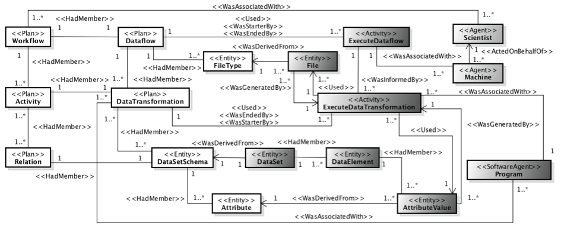

Considering the importance of provenance and raw data management in computer simulation runs to enhance traceability, reproducibility, and reliability, our research team developed a provenance data model named as PROV-Df. This data model is a specialization of the W3C PROV recommendation, to accommodate provenance and raw data in executions. We present PROV-Df in Figure 1. 
Figure 1. PROV-Df data model
PROV-Df is composed of three parts: the structure of the dataflow (white classes in the UML class diagram), execution of the dataflow (dark gray classes), and environment configuration (light gray classes). Each class in PROV-Df is extended from a PROV component. The stereotypes in the UML class diagram are used to represent PROV components. More details about PROV-Df can be found in our CCPE paper published in 2016.
In our Computational Fluid Dynamics (CFD) simulation runs, we used A-Chiron SWMS to enable the parallel execution of this computer simulation in a cluster environment. In this case, we extended provenance database using PostgreSQL DBMS to follows the PROV-Df data model. This extended version of our provenance database also contemplates the raw data analysis and the dataflow management at the physical and logical levels (i.e., file flow and data element flow). We can found Entity-Relationship diagrams of the A-Chiron’s provenance database using different versions of the CFD workflow (varying the strategy for raw data extraction or indexing).
Moreover, we export those data from the A-Chiron’s provenance database to PROV files using different file formats, such as DOT, JSON, PROV-N, and XML. We use ProvToolbox to generate these PROV files. Then, we validate our provenance data model using PROV-N file as input in ProvValidator. More details about the validation of PROV-Df data model can be found here.
Montage is a toolkit used for assembling astronomical images into custom mosaics, suitable for large-scale processing of the sky. Montage provides astronomers a service to build mosaics in Flexible Image Transport System (FITS) format, according to common astronomy coordinate systems, arbitrary image sizes, and rotations, and all World Coordinate System map projections.
We use this toolkit to model and execute an astronomy computer simulation using A-Chiron SWMS in a cluster environment. In this website, we provide a tutorial to execute a computer simulation using Montage and A-Chiron SWMS (Montage tutorial), and some additional details about the A-Chiron’s provenance database in this astronomy simulation.